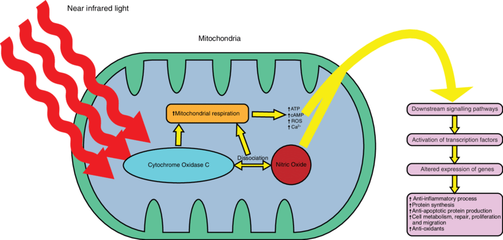

These are my other thoughts and intrests. They might not have to do with surviving life but they are things that intrest me enough to put research time into.
Computers and Phones
Traveling with Phones
Charging
I think the most important thing to thinkabout is the data someone can access with your phoneThen I thinkabout how to keep my phone charged.
This brings up the situation of how dangerous public charge ports are.
It is very easy for a hacker to make a public charge port not just be a charge port but also a data port capable of accessing your phone. This means pluging your phone into a public charging port or cable is a really bad idea. So how do we keep our phones charged? Use a small battery pack. You can charge your batterypack anywhere you would like there is no data on it to be stolen. If the charging device creates a voltage spike it only damages a $20 battery pack not a $1000 phone.
Even in your hotel it is not a bad idea to only use a batterypack to charge your phone. Again this will protect your device from power spikes in the hotel. I like to use my own surge protector in a hotel room but that is not always possible. So charging a battery pack then charge your phone is a way I protect my expensive devices.
Laptops can also use this technique if you have a good batterypack and your laptop power input is USB-C. You can get a batterypack with USB-C 30 watt PD (power delivery) port for only $20. A 60W PD battery pack is probably over $50 right now.
Here is a video on Juice Jacking
Don't destroy your data.
So to eject a drive find the thumb drive icon next to the clock. Click that once. It will give you a list of devices you can eject so you can safely unplug them.
security and identity issues with Computers
Giving Google your identitygreat security devices you can have in your pocket Privacy and security online
Frank Abigale security expert
how to protect your creditUse a credit card not a debit card
Protect against ID theft 2
life of a conman
Crime then and now
Supercheck
protect your identity and your kids identity
Talk at Google 2017
How to Increas the performance of windows 10
Use local account Turn off news Task manager startup - disable one drive Serings Xbox - disable game mode Computer properties-> advanced system settings - performance-> visual effects- adjust for best performance - disable remote assistance Restart Move swap file?iphone data transfer
moving health data to a different icloud account.
when logged into phone with 1 iCloud account
when logged into phone with 2 iCloud accounts
Traveling out of the country
Money
Credit cards vs ATM cards
First of all try and always use the chip reader, touchless reader, or just touch your phone to the card reader. These make it very hard for the businesses your are spending your money at to steal your credit card number. If you use your magnetic strip in a machine it is very easy for a hacker or that business to get all the information off that strip. Like the card number, your name, expiration date, and the card verification code.
If you are using an ATM card and a false transaction happens you are responsible of proving it is a false transaction before the bank gives you your money back.
If you are using an actual Credit Card and a false transaction happens the credit card company is legally required to remove to transaction, and then it is their responsibility of proving you made the transaction before they add the transaction back onto your account.
Chargers
checkout my article just before this
- visa charge card declined durring application because
the transaction was in another country.
I do plan to update this section more
Mitochondria
Schematic diagram of the mechanisms of photobiomodulation near infrared light within wavelengths (630-1000 nm) targets the mitochondrial enzyme cytochrome oxidase C resulting in (i) direct stimulation in mitochondrial respiration and (ii) dissociation of nitric oxide which indirectly increases mitochondrial respiration. These processes result in elevation of ATP, cAMP, reactive oxygen species and intracellular calcium which impact downstream signalling pathways that triggers increase in anti-inflammatory processes, protein synthesis, anti-apoptotic protein production, cellular repair/metabolism/proliferation/migration and antioxidants.  https://www.researchgate.net/figure/Schematic-diagram-of-the-mechanisms-of-photobiomodulation-near-infrared-light-within_fig1_321578491
How do carrier proteins transport ADP and ATP in and out of mitochondria? by MRC Mitochondrial Biology Unit
How do carrier proteins transport ADP and ATP in and out of mitochondria? The mitochondrial ADP/ATP carrier protein in the mitochondrial inner membrane, which carries out the vital task of transporting ADP into mitochondria and ATP out. Credit: MRC Mitochondrial Biology Unit Scientists at the MRC-MBU in Cambridge, U.K., have discovered how a key transport protein, called the mitochondrial ADP/ATP carrier, transports adenosine triphosphate (ATP), the chemical fuel of the cell. This process is vital to keep us alive, every second of our lives, for all of our lives. This work will help us understand how mutations can affect the function of these proteins, resulting in a range of neuromuscular, metabolic and developmental diseases. Cellular structures, called mitochondria, are the powerhouses of our cells. Every day, we humans need our own body weight in ATP to fuel all of the cellular activities. Nerve impulses, muscle contraction, DNA replication and protein synthesis are just some examples of essential processes that depend upon a supply of ATP. Since we only have a small amount of ATP in our body, we need to remake it from the spent product ADP (adenosine diphosphate) and phosphate using an enzyme complex, called ATP synthase, which is located in mitochondria. In this way, every molecule of ATP is recycled roughly 1300 times a day. For ADP to reach the enzyme, and for the product ATP to refuel the cell, each molecule has to cross an impermeable lipid membrane that surrounds the mitochondria. The mitochondrial ADP/ATP carrier is involved in the transport of ADP in and ATP out of mitochondria. The carrier cycles between two states; in one state, the central binding site is accessible for binding of ADP, called the cytoplasmic-open state, and in another, the binding site is accessible for binding newly synthesized ATP, called the matrix-open state. A key question has been how the protein is able to convert between these two states, changing its shape to transport ADP and ATP specifically, without letting other small molecules or ions leak across the membrane. The paper, "The molecular mechanism of transport by the mitochondrial ADP/ATP carrier," published in Cell, describes how scientists have solved the structure of the carrier trapped in the matrix-open state. The carrier was trapped in this state by using a compound called bongkrekic acid, a lethal toxin that binds to the protein and stops it from working. The researchers could also rely on Nanobody technology. Nanobodies are fragments of llama antibodies, which bind specifically to the matrix-open state, and the structure of carrier-nanobody complex with bound bongkrekic acid was determined by X-ray crystallography. Together with earlier structures of the cytoplasmic-open state, this discovery reveals how the carrier works at the atomic scale. The carrier is incredibly dynamic, using six moving elements to transport ADP or ATP across the membrane in a unique and carefully orchestrated way. The ADP/ATP carrier is just one member of a large family of related transport proteins that bring different compounds in and out of mitochondria, and based on this discovery, the scientists believe that this mechanism is likely to work in a similar way for the whole family. There are many diseases associated with dysfunction of these carriers and for the first time we understand how mutations affect their molecular function.
when did we become human
HOP_Four_skulls_p.jpg.webp Introduction to Human Evolution humanorigins.si.edu https://www.smithsonianmag.com/science-nature/essential-timeline-understanding-evolution-homo-sapiens-180976807/ When did we become fully human? What fossils and DNA tell us about the evolution of modern intelligence https://www.britannica.com/science/human-evolution/Background-and-beginnings-in-the-Miocene When did we become fully human? What fossils and DNA tell us about the evolution of modern intelligence map_human_migration_yourgenome.png
illustration-of-human-evolution-ending-with-smart-phone-resize-480x315.jpg
Evolution of modern humans
yourgenome.org
when dis homosapiens start
Google search
map_human_migration_yourgenome.png
illustration-of-human-evolution-ending-with-smart-phone-resize-480x315.jpg
Evolution of modern humans
yourgenome.org
when dis homosapiens start
Google search
 https://theconversation.com/when-did-we-become-fully-human-what-fossils-and-dna-tell-us-about-the-evolution-of-modern-intelligence-143717
https://theconversation.com/when-did-we-become-fully-human-what-fossils-and-dna-tell-us-about-the-evolution-of-modern-intelligence-143717
flying on an aircraft
Is there a doctor on the aircraft?” Top 10 in-flight medical emergencies - PMC https://www.ncbi.nlm.nih.gov/pmc/articles/PMC1119071/big lithium battery
2 lasagna pans5-6 scooter batteries
Clear shrink wrap
Power out the back?
Balance leads out both ends
Wood board and plexiglass between lasagna pans. With wires coming through.
Silicone blanket wrapping batteries with foam between them.
Strategic insulating boards
Artificial Intiligence
Introduction to large language modelshttps://www.youtube.com/watch?v=zjkBMFhNj_g&t=3s
x.ai Introduction
the first 10 minutes of this is introducing the developers they have gotten. At the 58 minute mark Elon talks about his conversations with google founders. https://www.youtube.com/watch?v=BR_Q_MXUM7cshowing how to train an AI
make a 4x4 board, the Computer starts on a1 and want to get to d4
put a clear box on each square with colorred tokens inside each color for a direction
once it gets to d4 then we remove each token of a wrong move
this is judging each move
now instead lets just judge the outcome
if it get to d4 in 4 moves we leave all the tokens otherwise we remove evey token pulled
this wont work very well, so allow it 10 moves if it does it put everything back if not remove everything
once it is good at that reduce it to 9 moves, then 8, then 7, ect
next do it again but when it gets it right put 3 of that color back in the box
now write that program so it doesnt need to be in the real world
now goto tick tack toe and link to the original experiment
talk about chess this way but it doesnt have to finish every game just get 5 points ahead
then give it everybook ever written and ask it what comes after "Where is my cat"
Buffy the Vampire slayer
by episode 2 Buffy had aquired what no other slayer before her had, friends. And these friends would change the cycle of slayers forever.
And I found this on one site ———-
One of the most memorable episodes of Buffy the Vampire Slayer is "Restless," which mainly consists of dream sequences. In one of these, two characters, Tara and Willow, talk while Willow paints Greek letters on Tara's naked back. The inscription must have been done hastily, because the initial letter in the eleventh line is actually calligraphed as a Latin "S" instead of a Greek "Sigma." For a long time, I wondered what the text was and doubted that it could be identified or reproduced. Happily, I learned that it is the poem "Immortal Aphrodite" by Sappho. While I am unable to present the text in actual Greek letters, I do offer below a transciption using Latin letters to represent the Greek text. While other websites (listed at the bottom of this page) can tell you more about this poem, no one else seems to have bothered to show how the calligraphy appears on Tara's back on television. I have done so here, complete with split words that begin at the end of one line and continue on the next. (Note that the only way of knowing how most lines end is to know how the next line begins, because the camera angle used in the television film shows us the left side of Tara's back far more clearly than the right.) While the words on Tara's back run together, I have put spaces between each word for the purpose of clarity, and I put a period at the end of the short line that ends the first stanza. I also finish the second stanza even though, in the television film, it is impossible to see whether the last line of the stanza has been completed or not. (If it is, the poem must continue on Tara's butt, which is not shown.)

 POIKILO' THRON' ATHANA/
T' APHRODITA PAI DI/
OS DOLOPLOKA, L/
ISSOMAI SE ME M'/
ASAISI MED' ONIAI/
SI DAMNA POTNI/
A THUMON.
ALLA TUID' ELTH' AI/
POTA KATEROTA T/
AS EMAS AUDO/
S AIOISA PELOI/
EKLUES, PATROS DE DOMON LIPOISA CHRUSION ELTHES
And here is Diane Rayor's translation of the above portion of the poem:
On the throne of many hues, Immortal Aphrodite,
child of Zeus, weaving wiles--I beg you
not to subdue my spirit, Queen,
with pain or sorrow
but [ALLA] come--if ever before
having heard my voice from far away
you listened, and leaving your father's
golden home you came...
It is worth noting that Sappho was not a dry poet in the modern sense, but a song writer. Unfortunately, the music that went with these lyrics has been lost. So, too, have most of her lyrics been lost.
POIKILO' THRON' ATHANA/
T' APHRODITA PAI DI/
OS DOLOPLOKA, L/
ISSOMAI SE ME M'/
ASAISI MED' ONIAI/
SI DAMNA POTNI/
A THUMON.
ALLA TUID' ELTH' AI/
POTA KATEROTA T/
AS EMAS AUDO/
S AIOISA PELOI/
EKLUES, PATROS DE DOMON LIPOISA CHRUSION ELTHES
And here is Diane Rayor's translation of the above portion of the poem:
On the throne of many hues, Immortal Aphrodite,
child of Zeus, weaving wiles--I beg you
not to subdue my spirit, Queen,
with pain or sorrow
but [ALLA] come--if ever before
having heard my voice from far away
you listened, and leaving your father's
golden home you came...
It is worth noting that Sappho was not a dry poet in the modern sense, but a song writer. Unfortunately, the music that went with these lyrics has been lost. So, too, have most of her lyrics been lost.
Back to the index
Links to other sites on the Web
A good intro to IMMORTAL APHRODITE
A site devoted to Tara featuring this poem
Another site that explains this poem's use by Tara and Willow
Hosted by www.Geocities.ws
DDO Dungens and Dragons Online MMO
DDO WikiThis has information on races, classes, enhancements, equipment, treasure, ect...Equipment generator
equipment Planner
Equipment Planner
gear Planner this site is amazing
Here is a statement from the developer from DDO forums
I realized I ought to put a post on the new forums so that people can still find this. I built the DDO Gear Planner website a while ago to help solve your gear tetris problems. You tell it which affixes you care about, and it will suggest gear that has those things. It's also super helpful for figuring out what bonus types you're missing for a particular affix.
The website lives at https://ddo-gear-planner.netlify.app/ and is mobile friendly!
You can easily share your builds by copying-and-pasting the admittedly-long URL. For example, here's my Ice Druid. If you scroll down, you can see that I have 30 out of 34 available points for Wisdom, and am missing the Exceptional bonus entirely. Clicking on any of the bonus type boxes shows you a list of gear with that bonus on it.
I don't spend much time on it these days, but most of the data is pulled nightly from the wiki, so new gear shows up automatically. I occasionally push updates when inspired, so feel free to leave suggestions... or better yet, make your own contributions through the GitHub repo, https://github.com/illusionistpm/ddo-gear-planner
Canith Crafting
DDO wiki explaining the Crafting great Canith crafting planner website there are 2 sections so remember to check out both.keeping a cooler cold
liquid waterIn a dry cooler using standing waterbottles might cause air convection
A student seeing someone shot vs
A student being hit by a car
There are 130,930 schools in the US. Lately there has been around 26 school shootings per year. So that is a 1 in 5000 chance a shooting will happen at any specific school.
The shooter gets close to maybe 10% of the students. Now we are a 1 in 50,000 chance that an individual student would see someone getting shot.
Approximately 25,000 children are injured each year in school zone accidents, with about 100 children being killed. This is mainly cars hitting kids walking home. This is what children should actually prepare for.
Teaching every teacher how to deal with major trauma injuries is a real good idea. Telling students they need to learn this is traumatizing more students than the actual shootings themselves. https://m.youtube.com/@SkinnyMedic